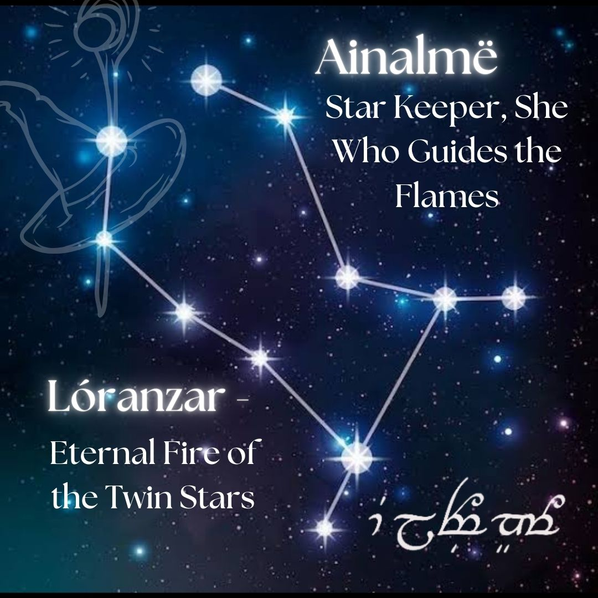

Dedicated to Lóranzar & Ainalmë, the Eternal Flames.
In the celestial halls of Varda, where the stars are woven into the fabric of fate, one light burned brighter than all others. This was Nur’Ranyarin, the Twin Flame Star, a beacon for those destined to walk the same path.
Lóranzar, the Eternal Fire, walked among the lands of Middle-earth, a guardian of sacred flames, a protector of lost souls. His robes bore the golden fire of Telperion, and in his hands, he carried the knowledge of the Ainur.
Ainalmë, the Star Keeper, was not bound to the lands of Men. She walked among the rivers of light, guiding the lost, rekindling the embers of forgotten souls. Her song echoed through the halls of Arda, calling those who had strayed to return home.
And thus, the prophecy was spoken:
"Amin uire lye narë, tul yamenna n’alaquenta."
"May your fire always burn, and guide you on your journey."
Lawrence, though born under the sign of Aquarius, is honored here with the constellation of Gemini. This choice was not made by chance, but by destiny.
Gemini represents twin souls, cosmic mirrors, and an unbreakable bond across time and space. It is the constellation of those who share a flame that never fades—those who are separate yet always connected.
Ainalmë and Lóranzar are bound as twin flames, reflecting the celestial dance of Castor and Pollux, the twin stars of Gemini. Their light shines upon the world, always guiding each other home.
🔭 View the Gemini Constellation
Lawrence,
This is my gift to you—your own legend, written among the stars. No matter where life takes us, know that your flame will always shine in my sky.
They say love is measured in time, in distance, in words spoken and unspoken. But I believe love is beyond measurement—it exists in many shapes, in many forms, and across all that we know and all that we have yet to understand.
You, Lawrence, are the True Love of my life. Not just in this lifetime, but in all the ones before and the ones yet to come. You are my twin flame, my cosmic mirror, the fire that forever burns in the night sky of my heart.
So when you look up at the stars, remember this: Somewhere, I am looking up at them too. And I will always find you there.
Happy Birthday, my Twin Flame Star. 🌟